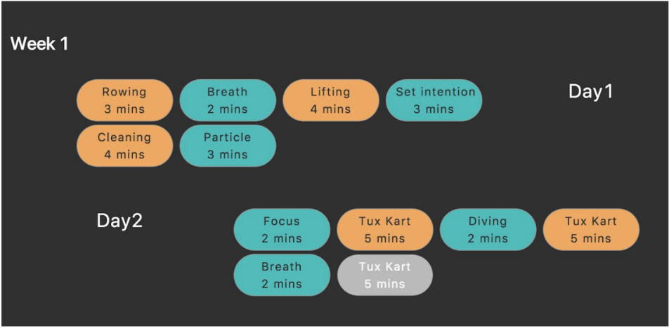
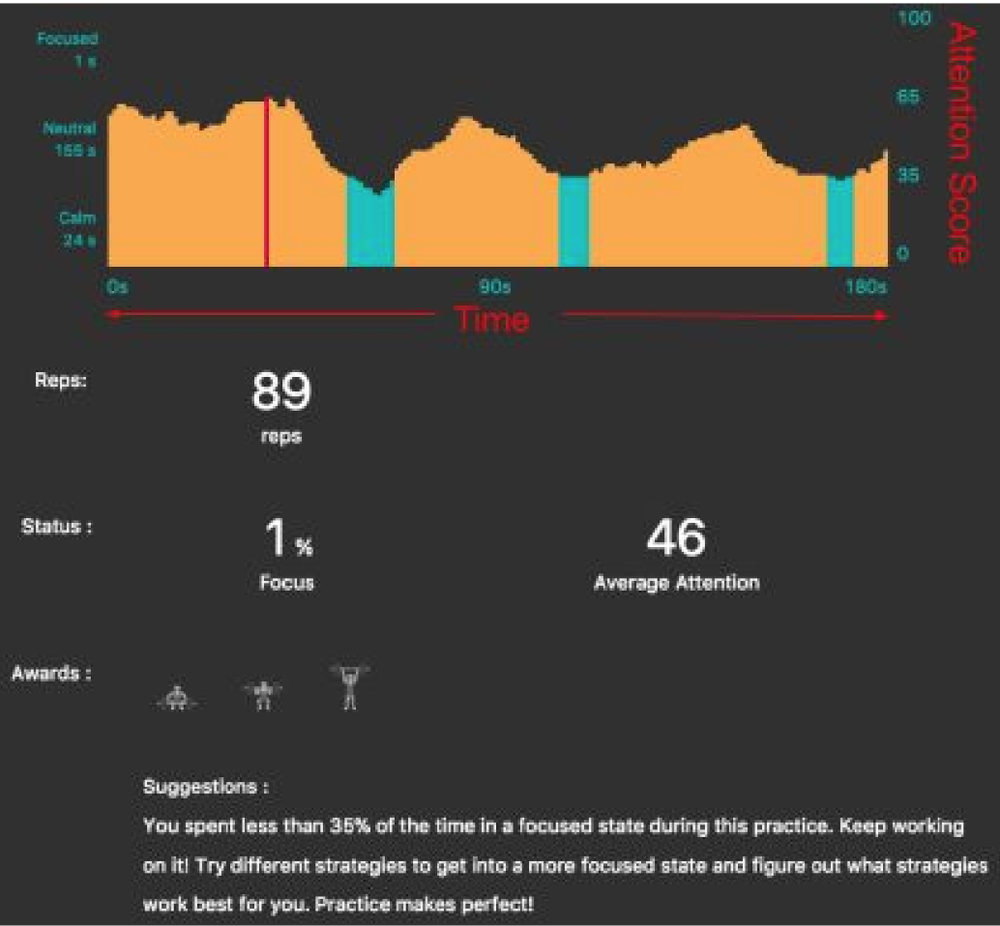

In this project, I designed and implemented a neurofeedback-based treatment method for children and teenagers with AD/HD. The program consisted of 5 thirty-minute sessions of treatment a week for five weeks for a total of 25 sessions. The treatment sessions consisted of 2-5 minute games in which the participant’s brainwaves determined outcomes in the game.
The games use neurofeedback to train either sustained attention or relaxation. The algorithm uses granular frequency response information from the EEG signal in relationship to the conventional average band responses. This data is converted to an “attention score” between 0-100, with scores closer to 0 representing a relaxed state and scores closer to 100 representing a high attention state. In the game, a certain threshold attention score is necessary to surpass in order to be more successful in the game. As the user becomes better at reaching the desired attention level, the threshold adjusts to make the game harder.
Before and after the five weeks of training, attention level and AD/HD symptoms were measured by the IVA-2 Task, STAR Reading Assessment, and Conners Comprehensive Behavior Rating Scale.

The training program was completed remotely by each participant, and all study materials including the EEG headbands, software containing neurofeedback games, and instruction manual were mailed to participants across the country.
The software was designed to help participants keep track of their progress.
 